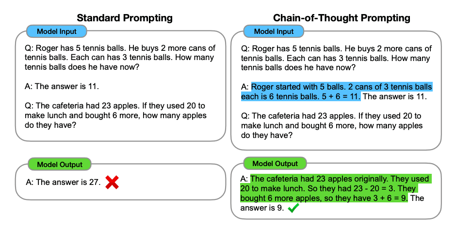
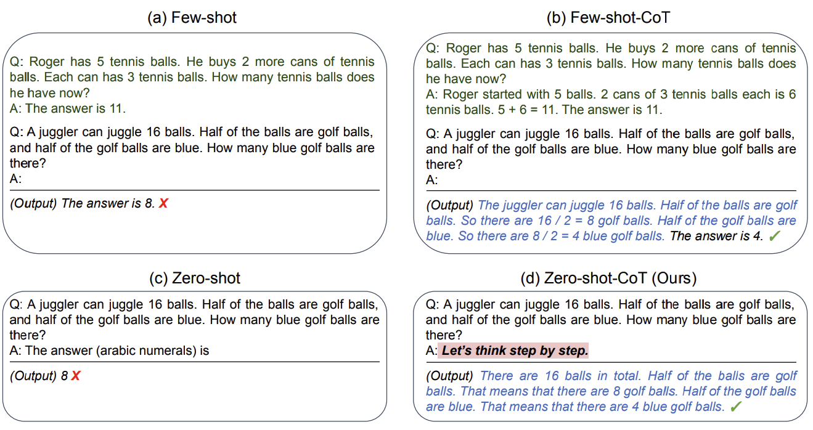
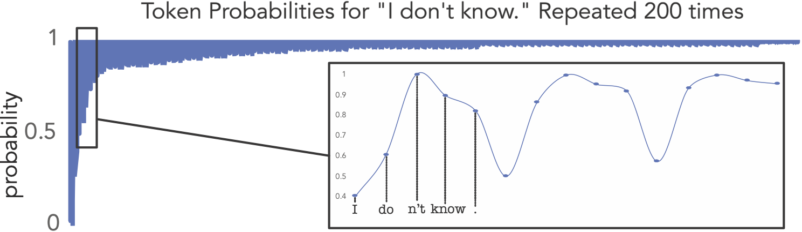
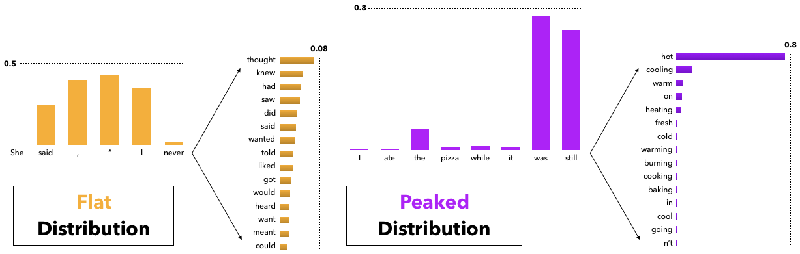
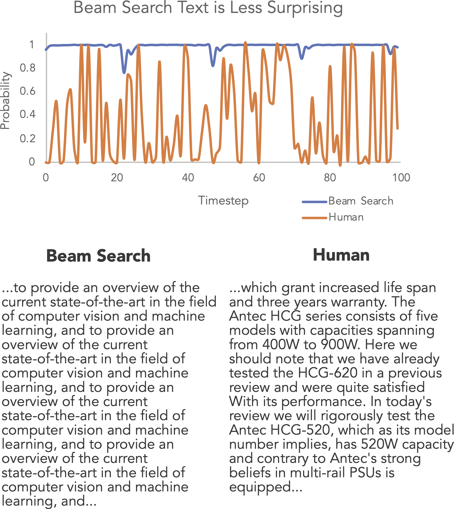

Chain-of-Thought Prompting
Ask the model to reason step by step before giving an answer.

Wei et al. (2022)
Zero-Shot Chain-of-Thought
Simply add "Let's think step by step" to the prompt.
No need to provide worked examples.

Beyond Prompting

Greedy: When It Goes Wrong
Open-ended generation can produce repetition loops:

Example from The Curious Case of Neural Text Degeneration by Holtzman et al.
But note: for modern aligned models, greedy works much better than it used to.
Top-k and Nucleus (Top-p) Sampling

Beam Search: Problems
